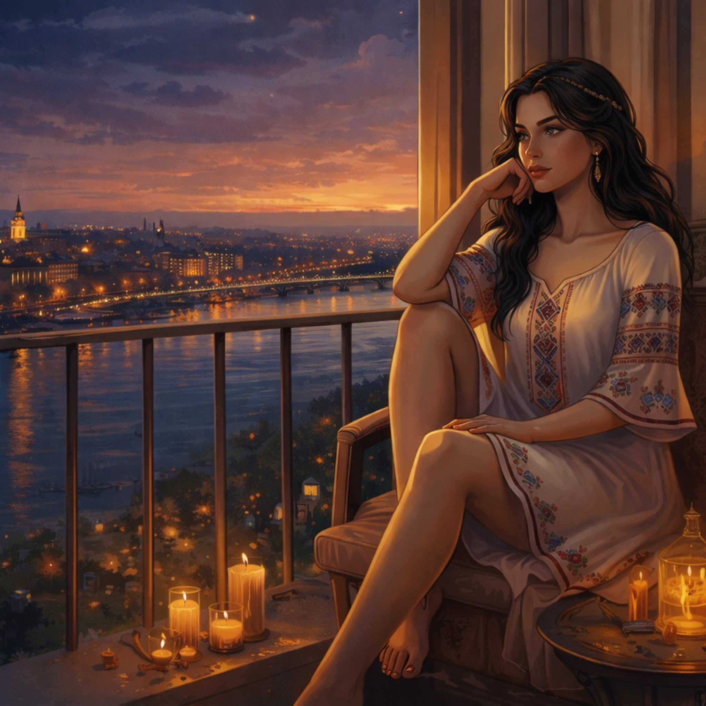
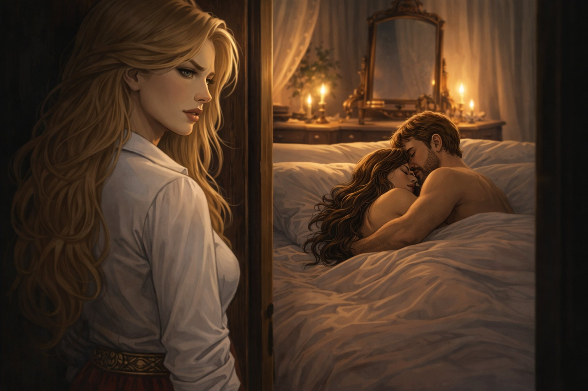
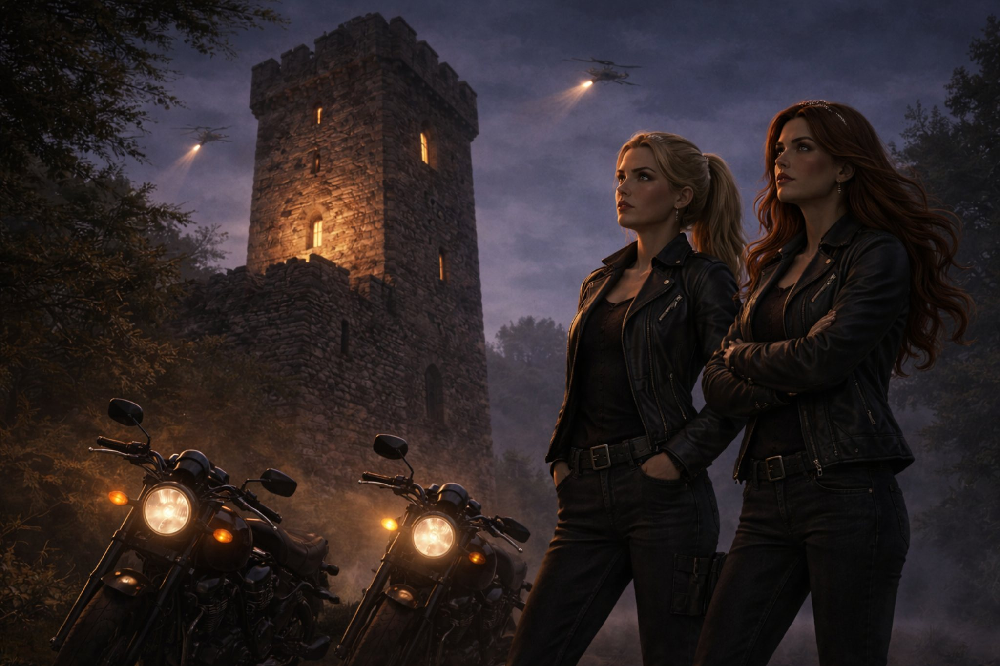
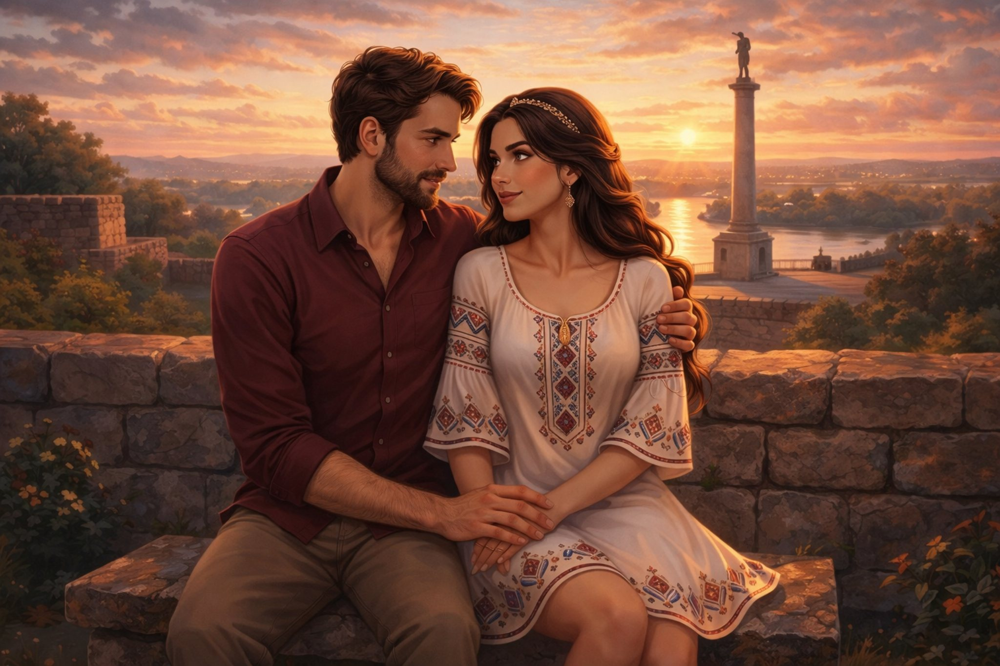
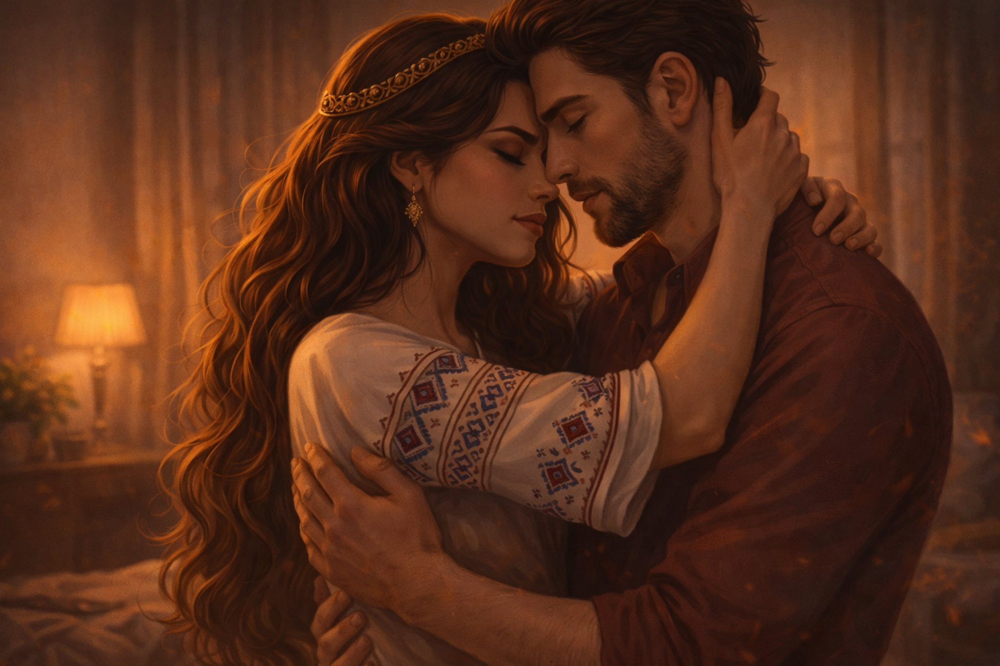
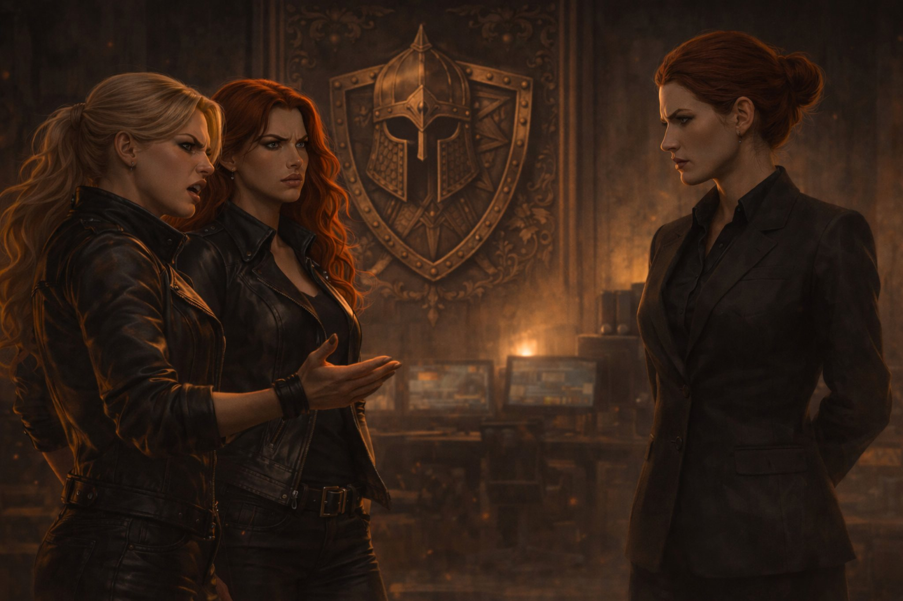
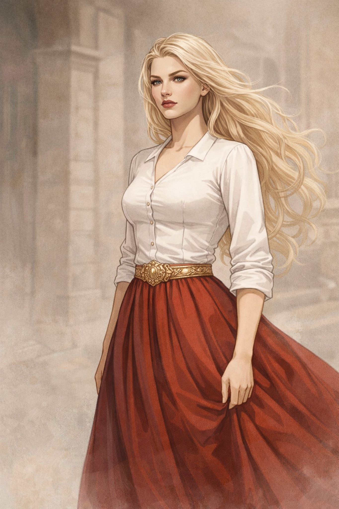
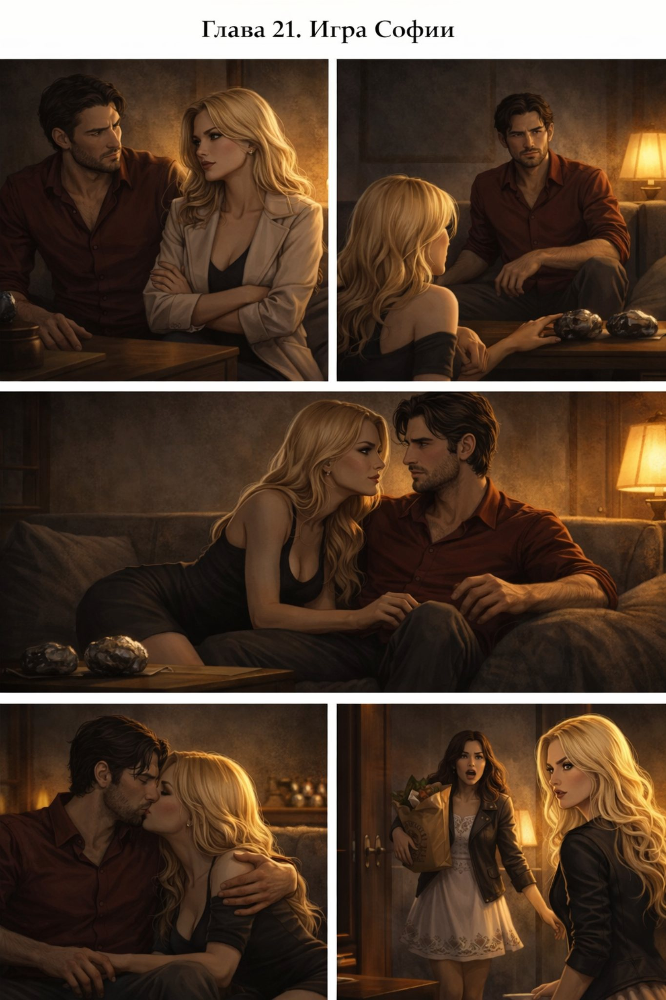

Capítulo 1

Поглавље 1: Сусрет у Београду
Луис је туриста. Он долази у Београд. Београд је велики град. Град је леп. Има много улица и паркова. Река Сава и река Дунав су у Београду. Ако идеш уз реку, видиш Калемегдан. Калемегдан је…
EntrarNovela + material de estudio interactivo
Cada capítulo tiene su propia página, con lectura cómoda, navegación entre capítulos y espacio para resolver los ejercicios directamente en la web.

Луис је туриста. Он долази у Београд. Београд је велики град. Град је леп. Има много улица и паркова. Река Сава и река Дунав су у Београду. Ако идеш уз реку, видиш Калемегдан. Калемегдан је…
Entrar
Луис и Наташа седе у парку. Сунце залази. Наташа гледа у реку. "Луис, желим да ти кажем нешто," каже Наташа. "Шта је то?" пита…
Entrar
Наташа и Луис завршају вечеру. Наташа гледа Луиса. Она каже: "Луис, желим да дођеш у мој стан. Могу да ти покажем још нешто о Београду." Луис је срећан. Он каже: "Да, хоћу. Волим твој…
Entrar
У Београду постоји стара кула. То је Кула Небојша. Кула је висока и тамна. Ноћу, у кули се види светло. Унутар куле, три особе седе за столом. Прва особа је висока и има дугу црну браду.…
Entrar
Луис и Наташа су у стану. Луис узима свеске са цртежима. Он показује Наташи своје радове. "Гледај," каже Луис. "Ово је један од мојих омиљених цртежа." Наташа гледа цртеж. То је пејзаж. Има…
Entrar
Софија има задатак. Она носи магичне камење. Камење ће помоћи да се контролише становништво када дође Час дивљака. Софија иде кроз град и оставља камење на различитим местима. Док хода,…
Entrar
Луис и Наташа се буде следећег јутра. Сунце светли кроз прозор. Они одлучују да шетају градом. "Хајде да идемо до Скадарлије," предлаже Наташа. "То је стара четврт са много историје." Луис…
Entrar
Наташа и Луис се враћају кући после шетње. Наташа прима поруку од Софије. Она је забринута. "Луис, погледај оvo," каже Наташа и показује му поруку. Порука гласи: "Наташа, сутра мораш…
Entrar
Наташа и Луис су у Националној библиотеци Србије. Наташа проналази стари рукопис на српском језику. Она пажљиво чита текст. "Луис, слушај ovo," каже Наташа. "Овде пише о Часу дивљака. Час…
Entrar
Луис и Наташа седе у кафићу и разговарају о Софији. Луис пита: "Наташа, одakле познајеш Софију?" Наташа одговара: "Познајемо се из школе. Понекад долази код мене у посету. Али је не…
Entrar
Софија, Артан и Џон се налазе у Кули Небојша. Кула је мрачна и тиха, али њихов разговор је напет. Софија говори: "Нисам могла да разговарам са Наташом. Била је са неким мушкарцем." Џон се…
Entrar
Луис и Наташа крећу ка првом месту на мапи – Калемегдану. Док шетају кроз парк, Наташа почиње да прича о историји овог места. "Калемегдан је једно од најстаријих места у Београду," каже…
Entrar
Луис и Наташа настављају да траже прво камење на Калемегдану, када се две жене које су их посматрале приближавају. Оне имају озбиљан и претећи израз. Обе су високе, плавокосе и говоре на…
Entrar
Луис и Наташа стижу у Наташин стан. Чим улазе, Наташа затвара врата и гледа Луиса пуним, одлучним погледом. "Луис, од сада ћеш живети овде," каже она чврсто. "Нећеш више становати у хотелу.…
Entrar
Две рускиње се враћају у своју базу, очајне и изнервиране. Улазе у собу где њихова шефица, Ирина, чека. Ирина је висока, са пуним ауторитета и хладним погледом. Оне јој прилазе, а једна од…
Entrar
Луис и Наташа седе у стану, разговарајући о следећим корацима. Ситуација је компликована, а они знају да су две рускиње у потрази за камењем. "Шта мислиш, да ли су те жене имале приступ…
Entrar
Луис и Наташа седе у стану, покушавајући да схвате ко су те рускиње и шта заправо траже. Наташа је узнемирена, а Луис покушава да смисли план. "Ко су те жене, Луис?" пита Наташа. "Шта њих…
Entrar
Луис и Наташа одлазе на друго место са мапе – Скадарлију. Када стижу, примећују нешто неочекивано. Софија излази из једне зграде, изгледајући узнемирено и журно. "Софија? Шта она ради…
Entrar
Након интензивног љубавног чина, Луис и Наташа леже у кревету, осећајући се опуштено и блиско. Наташа устаје и одлази у кухињу, враћајући се са две чашице сладоледа. "Ево, Луис," каже она,…
Entrar
Марина и Катарина, руске агенткиње из Агенције за мистичне послове, стижу на треће место са мапе – Храм Светог Саве. Овде је Софија оставила треће камење. Иако су озбиљно претучене од…
Entrar
Софија се налази у мрачној просторији са Артаном. Он је гледа пуним хладнокрвности и говори јој: "Софија, мораш да искористиш Луиса. Наташа је његова слабост. Ако га заведеш, она ће…
Entrar
Луис и Наташа седе у стану, након што су се помирили након инцидента са Софијом. Луис је пуним осећања и одлучује да јој отвори своје срце. "Наташа," почиње Луис, гледајући је пуним љубави,…
EntrarАртан седи у мрачној просторији, пуним беса и нетрпељивости. Софија стоји пред њим, слушајући његове наредбе. "Софија, доведи ми Наташу," говори Артан хладно. "Ако треба да убијеш Луиса,…
EntrarНаташа и Луис крећу ка четвртом месту на мапи – Авали. Наташа вози свој мотоцикл, а Луис je грли од позади. Ветар им пролази кроз косу, а осећај слободе je невероватан. Луис шапуће Наташи…
EntrarНаташа и Луис стижу на последње место на мапи – Зедањ. Овде, на крају напорног трагања, проналазе четврто камење. Луис га подиже, осећајући олакшање. "Најзад," каже Луис. "Имамо га." Али у…
EntrarЛуис и Наташа се буде у мрачној просторији, везани за столице. Пред њима стоји Ирина, пуним ауторитета и хладног презира. Ирина (гледа Наташу): "Знаш ли зашто си овде, Наташа? Американци те…
EntrarСцена 1: Стан Наташе и Луиса Џон и Софија улазе у Наташин стан, пуним оружја и одлучности. Али стан je празан – ни Наташе ни Луиса нема. Софија (љутито): "Где су? Нису могли да…
EntrarЛокација: Скривено склониште у Београду Луис и Наташа беже из Куле Небојша, носећи камења са собом. Ваздух је хладан, а град је у напетој тишини, као да сам зна да ће се нешто велико…
Entrar
Сцена 1: Рускиње у акцији Када су Џон и Софија спремни да изврше жртву над Наташом, изненада се појављују две рускиње – Марина и Катарина. Оне нападају Џона и Софију, ослобађајући Луиса.…
Entrar
Луис се враћа у своју нормалну величину, исцрпљен, али пуним олакшања. Његово тело је прекривено прашином и малим ранама од битке, али у његовим очима се види одлучност и мир. Он стоји на…
EntrarContenido basado en el documento subido por ti. fileciteturn0file0L1-L40